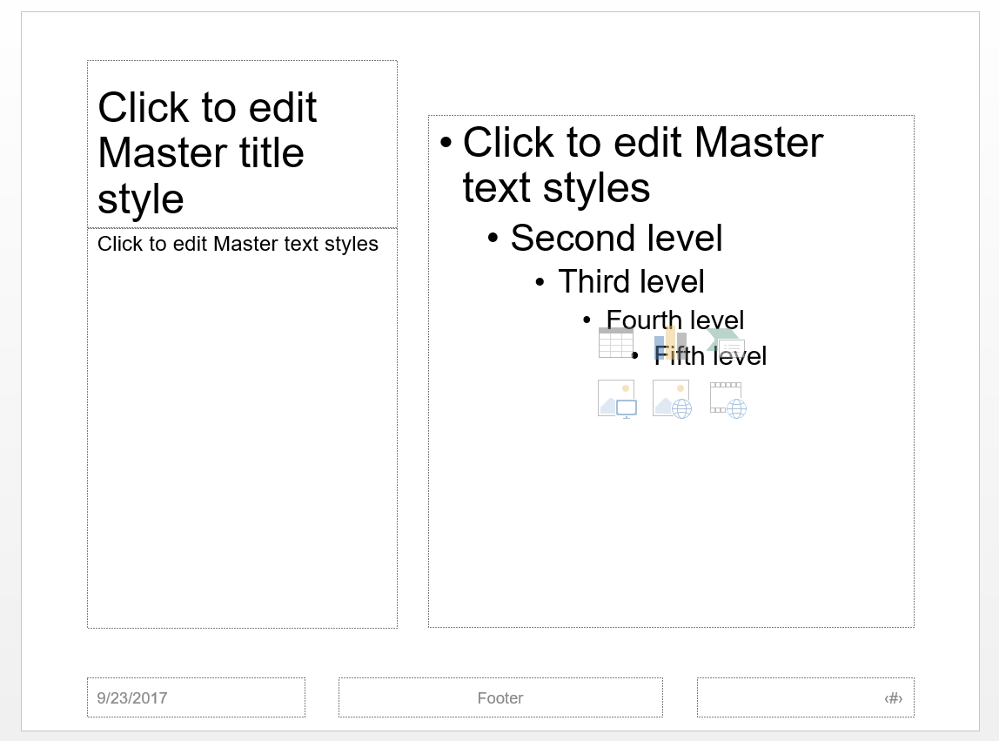
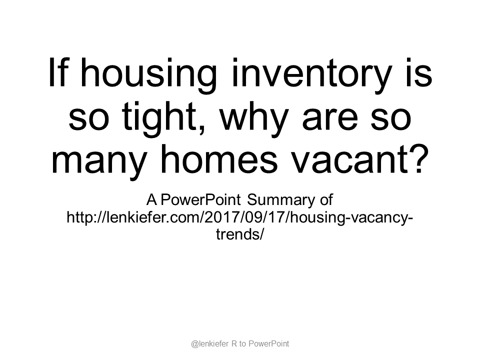

LOOK I DON’T HAVE ANYTHING BAD TO SAY about PowerPoint. Others have said it (see for example Tufte and Harvard Business Review). It’s a tool and a fact of life for many of us.
I am interested in making better PowerPoints. In this post we’ll use some R tools to generate a PowerPoint deck.
OfficeR
The package officer allows you to access and manipulate ‘Microsoft Word’ and ‘Microsoft PowerPoint’ documents from R. That sounds pretty great. Let’s take the pacakge for a spin.
What we’re going to do is turn my post from last week into a PowerPoint deck. It won’t be a beautiful deck, we’ll worry about that another day. But it will be a functional deck. And we’ll be able to demonstrate a workflow that can automatically generate powerpoint decks. At the end I’ll discuss some thoughts on how this could be extended.
The officer vignette has a useful summary that we will be following pretty closely below.
Template
First we’re going to need a template. I’m starting with something very close to the default “Office Theme” from PowerPoint. I modified the template to switch back from Calibri font to Arial. You might have a template from a company, univeristy or other place that you’d like to use. Whatever the case may be, you’ll need to save a blank PowerPoint deck somewhere that you can read in. I’m calling mine blank.pptx.
- Download my blank template blank.pptx
After saving our template we can load the officer library, read in our powerpoint and take a look at the structure.
library(officer)
library(magrittr)
my_pres<-read_pptx("data/blank.pptx")
knitr::kable(layout_summary(my_pres))| layout | master |
|---|---|
| Title Slide | Office Theme |
| Title and Vertical Text | Office Theme |
| Vertical Title and Text | Office Theme |
| Title and Content | Office Theme |
| Section Header | Office Theme |
| Two Content | Office Theme |
| Comparison | Office Theme |
| Title Only | Office Theme |
| Blank | Office Theme |
| Content with Caption | Office Theme |
| Picture with Caption | Office Theme |
If we were to go and modify the slide master of blank.pptx we could modify the available layouts. The slides we’ll add will inherit most of their characteristics from the template, so you might want to modify them in the template. I did that by changing the fonts from Calibri to Arial.
Now what are we going to do?
Converting a blog post to a deck
Let’s convert my housing vacancy blog post into a deck.
There are different strategies we could take for this, and in real life we would spend a lot of time thinking here. Who is our audience? What are we trying to accomplish? Do we really need a PowerPoint deck? We’ll talk more about those things in a different post.
Here let’s assume we want to create chartbook style presentation that would be read not projected. In the economic and finance world I live in, chartbooks are popular methods of communication. For a particularly thorough example, consider the Urban Institute’s Housing Finance at a Glance: A Monthly Chartbook.
Planning the deck
My original blog post had 5 charts. We will place each chart on its own slide and add commentary to the slide. We could get much more elaborate (see for example Nancy Duarte’s SlideDocs) but the default office “Content with Caption” pictured below works for me.

This will allow us to put some words along with our chart.
Charts
The nice thing about this workflow is that we can use R to generate our charts. See here for more discussion on data wrangling and chart generation. Just assume we followed that post and generated our charts and saved them as images.
For each of the 5 charts from my blog post I created a .png file with the image. I saved each image with names chart1.png through chart5.png and stored them in a folder called img.
Creating the deck
Now let’s build the deck. We’ll use the pipe operator (%>%) liberally here.
my_pres<-
# Load template
read_pptx("blank.pptx") %>%
# Add a slide
add_slide(layout="Title Slide", master="Office Theme") %>%
# Add some text to the title (ctrTitle)
ph_with_text(type = "ctrTitle", str = "If housing inventory is so tight, why are so many homes vacant?") %>%
# Add some text to the subtitle (subTitle)
ph_with_text(type = "subTitle", str = "A PowerPoint Summary of http://lenkiefer.com/2017/09/17/housing-vacancy-trends/") %>%
ph_with_text(type = "ftr", str = myftr )If we were to save this powerpoint deck here we’d have one slide:

Since we’re going to use the Title and Content layout in most of our slides, it’s helpful to understand its structure. The layout_properties() function is helpful here.
knitr::kable(layout_properties ( x = my_pres, layout = "Title and Content",
master = "Office Theme" ))| master_name | name | type | id | ph_label | offx | offy | cx | cy | |
|---|---|---|---|---|---|---|---|---|---|
| 14 | Office Theme | Title and Content | title | 2 | NA | 0.6875 | 0.3993066 | 8.625 | 1.4496533 |
| 15 | Office Theme | Title and Content | body | 3 | NA | 0.6875 | 1.9965278 | 8.625 | 4.7586811 |
| 16 | Office Theme | Title and Content | dt | 4 | NA | 0.6875 | 6.9513900 | 2.250 | 0.3993056 |
| 17 | Office Theme | Title and Content | ftr | 5 | NA | 3.3125 | 6.9513900 | 3.375 | 0.3993056 |
| 18 | Office Theme | Title and Content | sldNum | 6 | NA | 7.0625 | 6.9513900 | 2.250 | 0.3993056 |
We can see the the places where we can stick content under the type and id variables. In particular, we’ll want to include the title under title, the text under body 2 and the image in body 3. Note that if you use a custom layout, you might find you have to inspect the layout_properties for that layout to figure out where exactly you want your content to go.
Let’s keep going. We’ll store the commentary for each slide in variables.
# Intro summary slide
intro<-"Earlier this year we talked about how limited housing supply was helping to drive accelerating house prices across the country. In such an environment you would expect to see housing vacancies decline. Indeed, if you look at the rate of rental or homeowner vacancies you see a substantial reduction. But if we look a little closer at the housing inventory data something curious emerges."
# Set captions
cap1<-"During the Great Recession homeowner vacancy rates spiked, and gradually came back down. Rental vacancy rates did not spike nearly as much, but also came down in recent years as housing markets have gotten pretty tight."
cap2<-"The top two panels show the vacant for rent vacant for sale units that make up the rental and homeowner vacancy rates. The bottom right panel shows year-round vacant units which have been rented or sold but the new renters or owners have not moved in yet. That has a pretty clear seasonal pattern, matching the rhythm of the U.S. housing market, but remains constant at a little under one percent. The bottom left panel shows the share of housing units that are vacant and held off the market."
cap3<-"The year-round vacant other category has increased almost a full percentage point since 2005. Just to be clear, that's a lot of housing units. A one percentage point increase corresponds to over one million housing units. The largest component, taking up about a quarter are those units vacant due to personal/family reasons. This includes situations where the owner is in assisted living and not occupying the unit."
cap4<-"The U.S. Census Bureau began tracking a breakdown of the other category since 2012. This chart shows the breakdown of the percent distribution for the second quarter of 2017."
cap5<-"The share vacant due to foreclosure has declined quite a lot since 2012 when the U.S. housing market was still early in recovery. Those foreclosed housing units have largely moved through the system."
myftr<-"@lenkiefer R to PowerPoint"Then we can build the deck:
read_pptx("blank.pptx") %>%
# Title Slide
add_slide(layout="Title Slide", master="Office Theme") %>%
ph_with_text(type = "ctrTitle", str = "If housing inventory is so tight, why are so many homes vacant?") %>%
ph_with_text(type = "subTitle", str = "A PowerPoint Summary of http://lenkiefer.com/2017/09/17/housing-vacancy-trends/") %>%
ph_with_text(type = "ftr", str = myftr ) %>%
# Summary Slide:
add_slide(layout = "Title and Content", master = "Office Theme") %>%
ph_with_text(type = "title", index=1,str = "Summary") %>%
ph_with_text(type="body",str = intro ) %>%
ph_with_text(type = "ftr", str = myftr ) %>%
ph_with_text(type = "sldNum", str = "1" ) %>%
ph_with_text(type = "dt", str = format(Sys.Date(),"%B %d,%Y")) %>%
# Slide with Chart 1:
add_slide(layout = "Content with Caption", master = "Office Theme") %>%
ph_with_text(type = "body", index=2,str = cap1) %>%
ph_with_img(type = "body", index = 1, src = "img/chart1.png") %>%
ph_with_text(type = "title", index=1,str = "Homeowner and rental vacancy rates have declined") %>%
ph_with_text(type = "ftr", str = myftr ) %>%
ph_with_text(type = "sldNum", str = "2" ) %>%
ph_with_text(type = "dt", str = format(Sys.Date(),"%B %d,%Y")) %>%
# Slide with Chart 2:
add_slide(layout = "Content with Caption", master = "Office Theme") %>%
ph_with_text(type = "body", index=2,str = cap2) %>%
ph_with_img(type = "body", index = 1, src = "img/chart2.png") %>%
ph_with_text(type = "title", index=1,str = "More homes held off market") %>%
ph_with_text(type = "ftr", str = myftr ) %>%
ph_with_text(type = "sldNum", str = "3" ) %>%
ph_with_text(type = "dt", str = format(Sys.Date(),"%B %d,%Y")) %>%
# Slide with Chart 3:
add_slide(layout = "Content with Caption", master = "Office Theme") %>%
ph_with_text(type = "body", index=2,str = cap3) %>%
ph_with_img(type = "body", index = 1, src = "img/chart3.png") %>%
ph_with_text(type = "title", index=1,str = "Growth comes from other category") %>%
ph_with_text(type = "ftr", str = myftr ) %>%
ph_with_text(type = "sldNum", str = "4" ) %>%
ph_with_text(type = "dt", str = format(Sys.Date(),"%B %d,%Y")) %>%
# Slide with Chart 4:
add_slide(layout = "Content with Caption", master = "Office Theme") %>%
ph_with_text(type = "body", index=2,str = cap4) %>%
ph_with_img(type = "body", index = 1, src = "img/chart4.png") %>%
ph_with_text(type = "title", index=1,str = "Breakdown of the other category") %>%
ph_with_text(type = "ftr", str = myftr ) %>%
ph_with_text(type = "sldNum", str = "5" ) %>%
ph_with_text(type = "dt", str = format(Sys.Date(),"%B %d,%Y")) %>%
# Slide with Chart 5:
add_slide(layout = "Content with Caption", master = "Office Theme") %>%
ph_with_text(type = "body", index=2,str = cap5) %>%
ph_with_img(type = "body", index = 1, src = "img/chart5.png") %>%
ph_with_text(type = "title", index=1,str = "Distribution of other category over time") %>%
ph_with_text(type = "ftr", str = myftr ) %>%
ph_with_text(type = "sldNum", str = "6" ) %>%
ph_with_text(type = "dt", str =format(Sys.Date(),"%B %d,%Y")) %>%
# Print to save powerpoint
print( target = "Housing Vacancy Blog Post.pptx") %>%
invisible()You can download the deck here. Below I’ve embedded a pdf version of the slidedeck.
Is it beautiful? Maybe, but it could be better. The good news is that we can scale this workflow pretty easily, especially if we only wanted to include charts and not add custom commentary.
Discussion
This workflow has a lot of potential. I make a lot of charts and often in situations where ideas get communicated through PowerPoint decks. Being able to generate and manipulate PowerPoint files in R has tons of potential. Could this work for you?